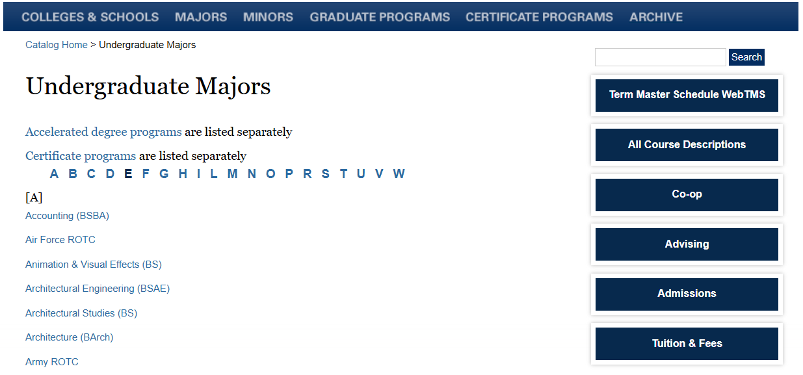
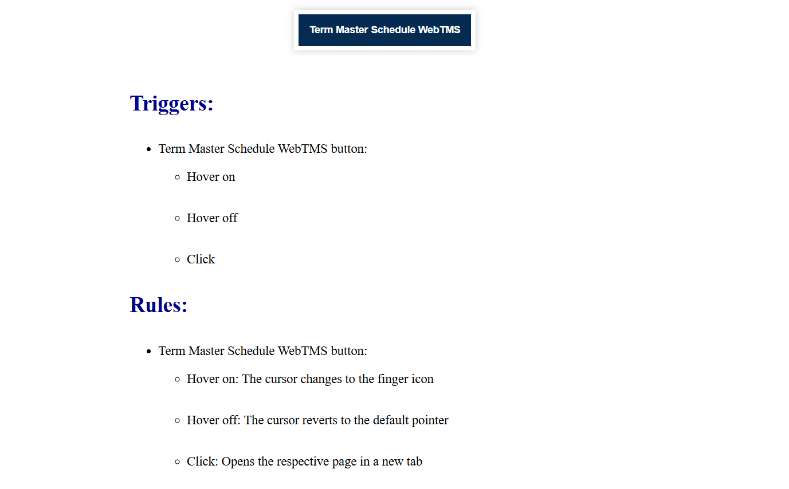
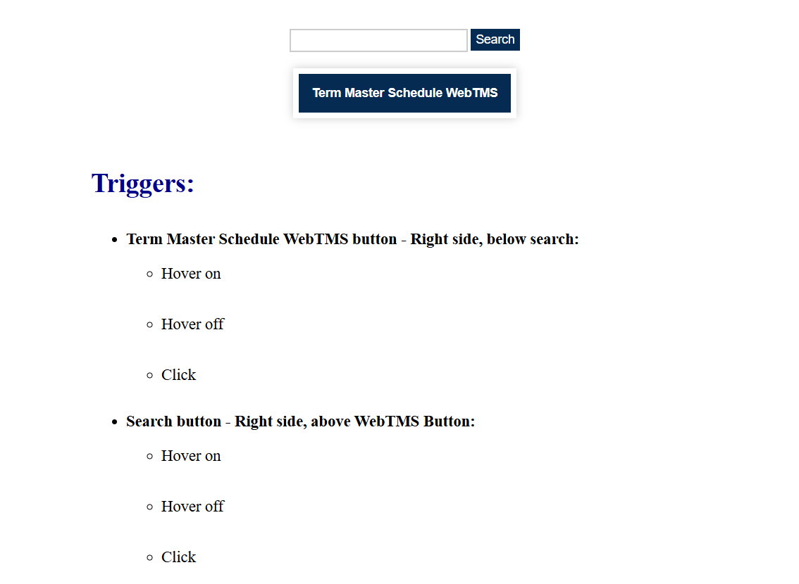
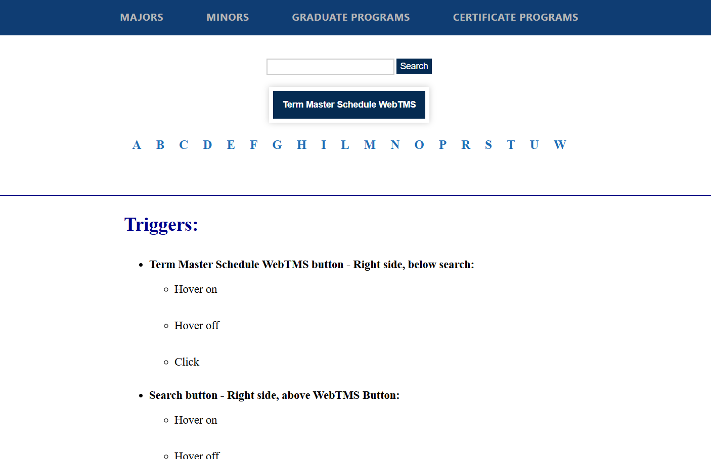

For this project, I was tasked with improving the microinteractions of 5 different objects on a chosen website. Then, I would write detailed descriptions of those changed interactions and document them on a website of my own developed through HTML, CSS, and JavaScript. I then had code functioning versions of each object with the described improvements now being fully implemented. I inserted the content for each object one by one into this website, which eventually became a completely redone version of the chosen interface with new and improved functioning objects, with fully documented descriptions of each interaction.
I was tasked with finding a website and improving the microinteractions of several of that website’s objects by building a website to display the improved version of those microinteractions, as well as detailed descriptions of those improvements for each of the chosen interactions.
This project was broken up into steps, meaning that I had to deliver the content slowly over the allotted 10 weeks. I had to stay up to date with my content every week to make sure I was developing the site properly, adding and updating content correctly, and eventually developing the code needed to make my improved revisions of the microinteractions into fully complete and interactable objects.
The goal was to incorporate a minimum of 5 different objects into one interface, each of which had fully functioning microinteractions that showed an improvement over the original version of that object. Below this interface, it was required to have a detailed description of each interaction written out to describe the rules, triggers, feedback, loops, and modes of each one.
First, I needed to find a website with objects that had flawed microinteractions that I could improve. I eventually landed on the Drexel Catalog website, as it had many incomplete or absent microinteractions for several objects. Specifically, I focused on the large buttons, the search button, the search field, the top navigation bar, and the sorting letters under the “Majors” and “Minors” tabs.
Once the site was decided on, I built a website in HTML and CSS that could display my information. First, I wrote out the descriptions for the current microinteraction of the big buttons. At first, only 1 object was required to be present and described, so I began there. This gave me a starting point, as I now had the site running, as well as the basic concepts of interaction description. Next, I coded in the same button, making sure to exactly replicate its interactions as I described.
Following this, for the next assignment, I needed to provide improvements to this button’s microinteractions as well as 2 additional objects. I chose to incorporate the search button and search field, as they went together and were already next to the big buttons on the Catalog website. I provided detailed descriptions on how to improve their microinteractions and provided images to show what they would look like.
Next, I had to code the changes I described to create a functional build with those changes now present. The buttons were simple to replicate in HTML and CSS, but the search field required a more complicated solution, so I added JavaScript code to add better click functionality and add the placeholder “Type Here” text, and provide the logic for that.
Lastly, I had to incorporate my last objects, which were the sorting letters and the top navigation bar. I wrote descriptions for their improved microinteractions, and for my images, I displayed them all as one interface and showed their individual changes one by one, to reflect the project goal of creating one improved interface by the end. With these additions, I only needed to code functionality for my final build of the site.
Once the functionality for the remaining objects was implemented, I had completed my interface and had 5 functional and improved objects based on the Drexel Catalog website. Additionally, I made improvements for the final design of the site, separating the content for a smoother experience and adding responsiveness for every object so it could be viewed on different-sized devices, including mobile ones. The link for the final build of the site can be accessed here.
With my final build, I have met the project goals and requirements, featuring 5 unique objects with improved microinteractions that all function in one cohesive interface. Accompanying this interface are detailed descriptions for the improved microinteraction of every object, so that anyone can read and understand what exactly is happening with each interaction present.